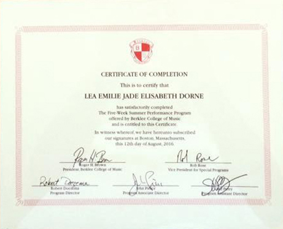

Born and raised in the Caribbean, Léa Dorne is a film composer, filmmaker and actress who carries the various cultures of her upbringing into her works, interractions, and way of life. She started a life-long dedication to classical piano studies at age 5 and composed her first piece at age 12. That same year, she joined the National Conservatory of Music of Santo Domingo, DR, where she was instructed in music theory.
>

About

In the wake of her senior year of highschool, Léa went to the 5-week summer program at Berklee College of Music where she was introduced to Jazz. The cultural diversity of her stay in Boston that summer is appearant in her music.
Léa is currently attending the Frost school of Music for her undergraduate studies in both Media Writing and Production and the Music Business and Entertainment Industry programs. Her attendance at the University of Miami allowed Léa to explore her interest in filmmaking and acting. She joined the Delta Kappa Alpha film fraternity and produced her first movie "Final Blow".